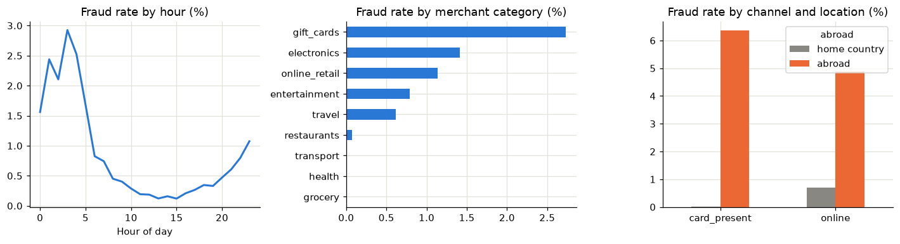
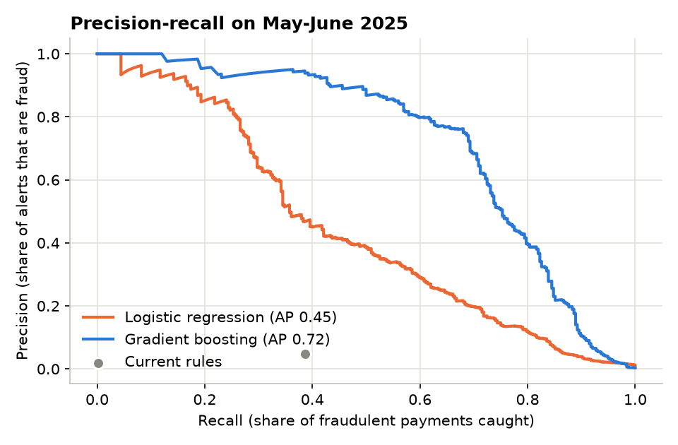

Fraud detection: a third of the alerts, twice the fraud caught
A payment provider's fraud team drowns in false alerts from three rules while half of the fraud gets through. I built behavioural features, compared the rules with two machine learning models, and chose the alert threshold in euros: what an alert costs to review against what a missed fraud costs.
Too many alerts, too much fraud getting through
Kestrel Pay (fictitious) alerts its fraud team with three rules: payments of €1,000 or more, online payments abroad, and more than five payments in an hour. Most alerts are customers shopping on foreign websites or travelling; meanwhile fraudsters who stay under €1,000 and pay from France are never flagged.
The usual way to judge a model ("accuracy") is useless here: with 4 frauds in 1,000 payments, a model that never raises an alert is 99.6% accurate. The question that matters is financial: for a given number of alerts the team can handle, how much fraud do we stop, and what does the whole thing cost?
Cost model: reviewing an alert costs about €8 (12 minutes of an analyst at €40/hour); a fraud that is not alerted costs its full amount. The best threshold minimises the sum of the two.
Six months of payments, with traps on purpose
Real payment data is confidential, so I simulated 3,000 customers with their own spending level, hours, devices and trips abroad, then injected three fraud patterns: account takeover (bursts of large payments, often from a new device), card testing (tiny payments, then large ones) and quiet fraud (single payments that look normal). Legitimate behaviour deliberately looks suspicious at times (foreign websites, new phones, night workers, strings of transport tickets) so the problem is not artificially easy.

Behaviour, not single payments
Fraud shows in a customer's behaviour more than in one payment. Every feature is computed from the customer's previous payments only: a feature that peeks at the future would look great in testing and fail in production.
- FeaturesAmount vs usual, new device, new country, bursts, tiny "test" payments, timing.
- Split by timeTrain January–March, tune April, test May–June.
- BaselineThe three rules in place today, measured the same way.
- ModelsLogistic regression and gradient boosting (scikit-learn pipelines).
- ThresholdThe score above which to alert, chosen on cost, on April only.
Judged in euros, on months the models never saw
Choosing the alert threshold
Cost over May–June by gradient boosting threshold: lower thresholds mean more alerts to review, higher ones more fraud missed
The threshold chosen on April (0.58) sits in the flat bottom of the curve.
What each pattern looks like to the rules and to the model
Share of fraudulent payments caught, May–June
What drives the model
Drop in average precision when each signal is shuffled

What I would recommend to the head of fraud
Limits: synthetic data; the cost model ignores customer friction from false alerts and assumes every alerted fraud is stopped. A real project would calibrate both with the fraud team before deciding.
Two pieces that make the difference
Rolling windows per customer with closed="left": a payment's features only use payments made before it.
def rolling_past(frame, column, window, how):
"""Per-customer rolling statistic over a time window, excluding the current payment."""
rolled = (frame.set_index("timestamp").groupby("customer_id")[column]
.rolling(window, closed="left").agg(how))
return pd.Series(rolled.to_numpy(), index=frame.index).fillna(0)
df["count_1h"] = rolling_past(df, "amount", "1h", "count")
df["is_small"] = (df["amount"] < 5).astype(int)
df["small_payments_10min"] = rolling_past(df, "is_small", "10min", "sum") # card testing
usual = by_customer["amount"].transform(lambda s: s.shift().rolling(20, min_periods=1).mean())
df["amount_vs_usual"] = (df["amount"] / usual).clip(upper=50)
df["new_device"] = ((df.groupby(["customer_id", "device_id"]).cumcount() == 0)
& (df["prev_count"] > 0)).astype(int)A simplified excerpt: the threshold is chosen on April only, by the business cost, then applied unchanged to May–June.
REVIEW_COST = 8.0 # EUR per alert reviewed
def best_threshold(scores, frame):
"""Scan thresholds and keep the one with the lowest review cost + fraud missed."""
fraud = frame["is_fraud"].to_numpy() == 1
amount = frame["amount"].to_numpy()
curve = []
for t in candidate_thresholds(scores):
flags = scores >= t
cost = flags.sum() * REVIEW_COST + amount[~flags & fraud].sum()
curve.append((t, cost))
return min(curve, key=lambda item: item[1])
threshold, _ = best_threshold(model.predict_proba(validation[features])[:, 1], validation)
alerts = model.predict_proba(test[features])[:, 1] >= threshold